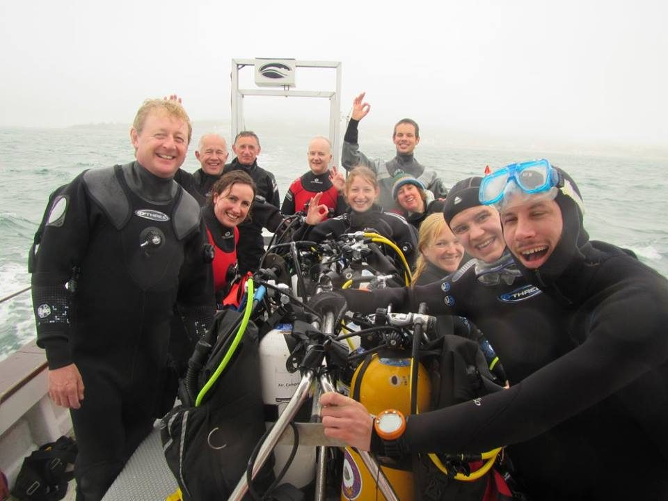

Swanage, June 2016

We had a nearly record club turn out for the first big dive weekend of the year, as fifteen Argonauts members spent an enjoyable few days diving from Swanage.
To warm up after Winter and to give several new members their first taste of open water diving we started off under the pier. It was easily one of the best dives of the weekend as we saw spider crab, edible crab, a huge lobster, cuttlefish, wrasse, sponges and some impressive soft corals. The shafts of sunlight (when it wasn't raining!) coming down between the wooden beams was spectacular.
Our next dive was with Swanage Boat Charters, on the famous Valentine Tanks at 15m. Despite poor visibility (and nearly losing the line!), we did manage to find both tanks, as well as a huge shoal of bib, some nice spider crabs, dogfish and a monstrous resident conger eel. Being such a big and friendly club, we then headed off to the pub to talk about the exciting new experiences of our first sea dives.
We woke the next day to a very British summer, with a light drizzle as we were putting on our dry suits. But we were glad we did as we headed off to do the Old Harry Drift For those of us that are new to diving, a drift is certainly a strange and exhilarating experience as you whiz over the seabed spotting things like dogfish and crabs as they zoom by.
Lastly, we headed over to the other side of the bay to dive the Peveril Ledges. Here there's a drift dive with a difference as huge horizontal slabs force you up and over, while keeping an eye out for fish and invertebrates. Luckily, just as we were preparing to surface we did spot a big thornback ray.
That's all for our Swanage trip, looking forward to more dives this summer!